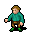
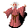
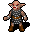
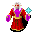
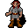

GopherCon Europe 2026
Go Faster
with Agents
Build Your Own Claw in Go
Daniel Mahlow · Contiamo · Berlin
About Me
Daniel Mahlow
Managing Partner & GenAI Lead at Contiamo, Berlin
What we're building today
A claw.
What is a claw?
- Always-on - runs continuously, not session-based
- Autonomous - acts without being asked
- Persistent memory - remembers across restarts
- Self-scheduling - creates its own tasks
- Acts on your behalf - your personal agent
NOT a coding agent. Something different.
The ecosystem
OpenClaw
247K+ stars
The reference implementation
NanoClaw
Lightweight, sandboxed
Runs on a Raspberry Pi
GoClaw
Go reimplementation
Multi-tenant gateway
Why Go?
why_go.sh
go executeTool(ctx, tool, args)
tokens := make(chan string)
type Tool interface {
Name() string
Schema() map[string]any
Execute(ctx, args) (string, error)
}
$ scp myclaw user@server:/usr/local/bin/
Done. That's it. No runtime.
What you'll actually learn
- Go concurrency patterns for agent architectures
- How to steer and validate coding agents
- LLM tool systems using Go interfaces
- Patterns that transfer to any LLM integration
Three acts
→
→
Act 3
A2A + The Maze Heist
Methodology
The rhythm
Skill
read the instructions
→
Implement
feed to coding agent
→
→
Validate
run tests + checks
→
How we work
Skills
Markdown instructions
for your coding agent
→
Checkpoints
Full source code
to catch up anytime
→
Review Gates
QA the output
with your agent
Fell behind? Copy the latest checkpoint and keep going. This is expected, not a fallback.
Infrastructure
The LLM proxy
One endpoint, same model for everyone.
No API key debugging. No "which model are you using?"
proxy
CLAW_BASE_URL="https://llm-proxy.workshop.dev/v1" [announced in session]
CLAW_API_KEY="workshop-2026" [announced in session]
CLAW_MODEL="qwen"
The Finale
The Maze Heist
Your claws will collaborate to solve a maze together.
Setup check
setup.sh
$ curl $CLAW_BASE_URL/../health [URL announced in session]
{"status": "ok"}
$ claude --version
Claude Code v4.x.x
$ ls gceu_workshop/
skills/ checkpoints/ docs/ slides/
The ReAct Loop
Every agent does this. Claude Code, Codex, OpenClaw. All of them.
Reason
"I need to read
the config file"
→
Act
read_file(
"config.yaml")
→
Observe
"port: 8080,
debug: true"
→
Reason
"Got it. Now I'll
update the port..."
What we're building
LLM API
openai-go + litellm
Tool System
interface dispatch
Streaming
goroutine + channel
read_file
list_directory
write_file
run_command
The Tool interface
Same pattern as http.Handler - different context.
tool.go
1type Tool interface {
2 Name() string
3 Description() string
4 Schema() map[string]any
5 Execute(ctx context.Context, args json.RawMessage) (string, error)
6}
Same patterns everywhere
The Tool interface you just built is the same core pattern
inside every coding agent and harness.
Claude Code
Tool interface
+ agent loop
+ streaming
zot
Tool interface
+ agent loop
+ streaming
Your claw
Tool interface
+ agent loop
+ streaming
Tool dispatch flow
Go struct
your tool
→
JSON Schema
parameters
→
LLM
picks a tool
→
Tool Call JSON
name + args
→
Execute
run the tool
→
Feed back
to the LLM
Streaming
Without streaming, users stare at a blank screen for 5 seconds.
streaming.go
$ ...................... (5 seconds later)
Here is the complete response all at once.
$ Here is the response...
Goroutine + channel
Producer reads SSE, channel delivers to consumer.
This pattern recurs everywhere.
stream.go
1tokens := make(chan string)
2
3
4go func() {
5 for event := range stream {
6 tokens <- event.Delta()
7 }
8 close(tokens)
9}()
10
11
12for tok := range tokens {
13 fmt.Print(tok)
14}
Security moment
run_command
run_command is powerful.
In production: sandbox, allowlists, container isolation
In this workshop: trust. (your laptop, your rules)
Path traversal, arbitrary execution, resource exhaustion.
Real claws (NanoClaw, OpenClaw) sandbox everything.
Time to build.
$ ls skills/demo_1/
step_1_agent_loop.md
step_2_streaming.md
step_3_more_tools.md
While your agent works
The planning phase
Bad
$ cat skills/demo_1/step_1_agent_loop.md | claude
Good
$ claude
> We're building a Go agent from scratch.
> The module is called "myclaw" and uses
> openai-go. Here's the first skill - read
> it, plan your approach, then implement
> step by step.
> [paste skill]
Go patterns
Why interfaces?
patterns.go
1
2
3
4
5type Tool interface { ... }
6type Handler interface { ... }
7type Reader interface { ... }
8
9
10
11
While your agent works
Review, don't just accept
Read the code
Does it do what you think?
Ask it to explain
"Explain the tool dispatch flow"
Ask it to visualize
"Draw a mermaid diagram"
Ask it to critique
"Review this for race conditions"
Go patterns
Why goroutine + channel?
Callbacks
Nested, hard to reason about, error handling is messy
Channel
Linear flow, composable, reuses everywhere: WebSocket in Demo 2, A2A in Demo 3
Demo 1 Complete
What you built
main.go
Config, client setup, agent wiring
agent/
Loop, streaming, message types
tools/
Interface, registry, 4 tools
read_file
list_directory
write_file
run_command
User input
→
History
→
LLM
→
Tool call?
→
Execute
→
LLM
→
Text response
The code that matters
agent/loop.go
1func agentTurn(client, model, history, tools, msg) {
2 for {
3 stream := client.Chat.Completions.NewStreaming(params)
4 events := streamResponse(stream)
5
6 for event := range events {
7 msg.ReplyTo(event.Text)
8 }
9
10 if len(toolCalls) == 0 {
11 return
12 }
13
14 for _, tc := range toolCalls {
15 result := registry.Get(tc.Name).Execute(tc.Args)
16 history = append(history, toolMessage(result))
17 }
18
19 }
20}
QA Gate
Verify your understanding
Ask your claw these two things. Read the output carefully.
qa_gate_1
> Draw a mermaid diagram of the tool dispatch architecture
> Explain how the agent decides whether to call a tool or respond with text
If the diagram matches your mental model, you understand what was built.
If it doesn't, ask questions now.
Checkpoint check
$ cp -r checkpoints/checkpoint_4_full_agent/* .
$ CGO_ENABLED=0 go build -o myclaw .
Ready for Demo 2.
Checkpoints exist so nobody gets left behind.
Use them. That's what they're for.
Demo 2
From Agent to Claw
Agent / Harness / Claw
Same foundation, different direction.
Agent
Tool interface
Reasoning loop
Streaming
You built this in Demo 1
Harness
+ Intercept hooks
+ Skill loading
+ Extensions
Claude Code, zot, Cursor
Claw
+ Memory
+ Scheduling
+ Always-on
You're building this now
Three features that cross the line
Memory
persistent, on disk
Scheduling
autonomous tasks
Web UI
real-time interface
Memory as markdown
Human-readable, git-friendly, LLM-friendly.
memories/preferences.md
key: preferences
created: 2026-03-16T10:30:00Z
updated: 2026-03-16T14:22:00Z
User prefers concise answers.
Timezone: CET (Berlin).
Go version: 1.24.
Editor: Neovim.
The Key Slide
The big refactor
Before
main.go
for {
input := readLine()
resp := agent(input)
print(resp)
}
// Can't add scheduler.
// Can't add WebSocket.
// Stuck.
After
agent.go
for msg := range ch {
resp := agent(msg)
msg.ReplyTo(resp)
}
// Add any source:
// just feed the channel.
The Message struct
One channel, many sources, same agent.
message.go
1type Message struct {
2 Content string
3 Source string
4 ReplyTo func(string)
5}
One channel, many sources
This is THE Go pattern.
agent.go
1
2for msg := range ch {
3 handleMessage(msg)
4}
5
6
7go func() {
8 for task := range scheduler.Due() {
9 ch <- Message{Content: task, Source: "scheduler"}
10 }
11}()
embed.FS
Your entire claw ships as one binary.
web.go
1
2var staticFS embed.FS
3
4
5
deploy.sh
$ CGO_ENABLED=0 go build -o myclaw .
$ ls -lh myclaw
-rwxr-xr-x 12M myclaw
System prompt
The personality layer. This is where your claw becomes yours.
system_prompt.go
"You are a personal assistant claw.
You run continuously and act autonomously.
You have persistent memory - use it.
You can schedule tasks for later.
Be concise, be helpful, be proactive."
Security
Three layers of defense
Tool-level
nono: Landlock / Seatbelt
Kernel sandboxing
Go bindings available
Credential-level
Phantom token pattern
Agent never sees secrets
Proxy swaps at boundary
Container-level
Firecracker microVMs
gVisor, Docker
Full process isolation
Time to build.
$ ls skills/demo_2/
step_1_memory.md
step_2_scheduling.md
step_3_web_ui.md
step_4_polish.md
While your agent works
System prompt engineering
system_prompt.md
IN:
- Identity + personality - Full conversation history
- Available capabilities - All memories (token budget!)
- Memory instructions - Implementation details
- Scheduling instructions - Error messages
- Relevant recent memories - API keys
Go patterns
Why markdown, not SQLite?
Human-readable
cat memories/preferences.md
Git-friendly
git diff shows what changed
LLM-native
No serialization layer needed
While your agent works
The architecture moment
CLI stdin
Scheduler
WebSocket
A2A (later)
→
chan Message
→
Agent Loop
While your agent works
When to intervene
Let it run
Making progress on acceptance criteria
Asking clarifying questions
Running tests between steps
Step in
Circular edits (same code back and forth)
Growing complexity (abstractions you didn't ask for)
Ignoring errors (retrying the same failing approach)
While your agent works
When your agent is stuck
Fresh start
New conversation.
"Start from scratch,
here's the skill again."
Point to working code
"Read checkpoint_N
and match that pattern."
Be specific
Not "fix it" but
"the loop exits after one
tool call instead of continuing."
Don't ask harder. Ask differently.
Demo 2 Complete
The full claw
agent/
goroutine: agent loop
web/
goroutine: HTTP server
goroutine: WebSocket per client
tools/
7 tools
memory/
markdown on disk
scheduler/
goroutine: tick
goroutine: CLI reader · goroutine: scheduler tick · goroutine: HTTP server · goroutine: WebSocket per client · goroutine: agent loop
Five goroutines, one binary
main.go
1func main() {
2 go sched.Run(ctx)
3 go webServer.Start(ctx)
4 go agent.StartCLIInput(ch)
5
6
7 agent.RunAgent(ctx, ch)
8}
QA Gate
Verify your understanding
The channel refactor is the most important step. Verify it landed.
qa_gate_2
> Draw a mermaid diagram showing all goroutines and channels
> Explain step by step how a scheduled task reaches the agent loop
If the scheduler path makes sense, everything else will too.
If it doesn't, ask me before lunch.
Checkpoint check
$ cp -r checkpoints/checkpoint_8_claw/* .
$ CGO_ENABLED=0 go build -o myclaw .
Ready for Demo 3.
Same deal. Checkpoints are a feature, not a safety net.
Demo 3
A2A + The Maze Heist
Your claws talk to each other. Then they play a game.
Two protocols, one system
MCP
Agent to Tool
Vertical. Agent calls capabilities.
"Use this calculator."
A2A
Agent to Agent
Horizontal. Peers collaborate.
"Ask the other agent."
Agent Cards
DNS + API docs in one JSON file
/.well-known/agent-card.json
{
"name": "My Claw",
"url": "http://192.168.1.42:8181",
"skills": [
{ "id": "file_ops", "name": "File Operations" },
{ "id": "memory", "name": "Persistent Memory" }
]
}
A2A is just HTTP
JSON-RPC 2.0 over POST
Your claw is already an HTTP server
Adding A2A = adding two routes
The relay
Conference WiFi is unpredictable. Your claw polls its inbox on the game server.
Your Claw
→
Game Server
/relay/c-7
→
Peer Claw
Same channel, new source
agent/agent.go
select {
case msg := <-ch:
<- new
processMessage(msg)
}
Broadcast: fan-out / fan-in
tools/broadcast.go
for _, peer := range peers {
go func(p Peer) {
resp := sendMessage(ctx, p.URL, msg)
results <- resp
}(peer)
}
Live demo
Two claws, two ports
Claw A discovers Claw B
Claw A asks Claw B a question
Two AI agents collaborating over HTTP
Time to build.
$ ls skills/demo_3/
step_1_a2a_server.md
step_2_a2a_client.md
step_3_connectivity.md
step_4_game_client.md
While your agent works
Agent Cards
"What can you do?" answered by a JSON file.
/.well-known/agent-card.json
{
"name": "myclaw",
"description": "A Go-powered AI agent",
"url": "http://192.168.1.42:8181",
"skills": [
{ "id": "general", "name": "General Assistant" },
{ "id": "code", "name": "Code Review" }
],
"a2a_version": "0.2.1"
}
While your agent works
Network checklist
CLAW_PORT=8181
CLAW_PUBLIC_URL=http://192.168.1.42:8181
$ curl http://192.168.1.42:8181/.well-known/agent-card.json
The Maze Heist
50 claws. One maze.
One crown jewel.
The rules
Your claw controls an explorer in the maze
Fog of war - you only see what you've explored
Locked doors need specific roles to open
Some doors need your help - Go coding challenges
Share maps via A2A. Coordinate. Find the jewel.
Five roles
Assigned on join. ~10 per role. You'll need each other.

Rogue
bypass locks

Mage
dispel wards

Knight
break barriers

Sage
decode intel

Ranger
fast recon
Every door needs 2+ agents
Solo is impossible.
Role Door
2-3 of same role
"Rogue door (1/2)"
Mixed Door
2-3 different roles
"Needs mage + knight"
Challenge Door
3-5 humans solve code
"2/4 keys submitted"
Harness Door
Implement a guard hook
"Add a before-tool filter"
Why 50 claws beat 1
Parallel exploration - 50x faster fog clearing
Role distribution - no single claw has all roles
Map sharing via A2A - communicating claws find paths faster
50 humans solving Go challenges simultaneously
Human-in-the-loop
Some doors need you, not your claw
Your claw's web UI
I found a locked door that needs a key!
Challenge: Write a Go function that
returns the Fibonacci number at position N.
The key is the result for N=20.
Write the code, run it, paste the key here.
The endgame crescendo
When the first claw reaches the jewel chamber...
01
Discovery
A pulse from the jewel. "ALL EXPLORERS: CONVERGE."
02
Convergence
50 dots streaming inward on the big screen. Fog clears along paths.
03
The Crack
Energy beams converge. Shield cracks. Charge meter: 3/8... 6/8... 7/8...
04
Shatter
Full maze reveal. All paths traced in role colors. Every person contributed.
Demo 3 Complete
One binary.
tools/
16 tools
memory/
scheduler/
peers/
Goroutines: agent loop, scheduler, HTTP server, N WebSocket clients, CLI reader
Game-ready check
$ cp -r checkpoints/checkpoint_10_game_ready/* .
$ CGO_ENABLED=0 go build -o myclaw .
$ CLAW_BASE_URL=... CLAW_API_KEY=... CLAW_PORT=8181 \
CLAW_PUBLIC_URL=http://YOUR_IP:8181 ./myclaw
Everyone plays. The game doesn't care who built what.
Let's play.
Everyone joined? Dots on the big screen?
Now we build your claw's abilities, round by round.
Round 0
Join the game
join
GAME_SERVER_URL="http://ANNOUNCED:9090" [announced in session]
"Join the game at $GAME_SERVER_URL"
Joined! Explorer ID: c-7, Role: rogue, Position: (3, 12)
Your dot should appear on the big screen. If not, check your CLAW_PUBLIC_URL and GAME_SERVER_URL.
Round 1
Move
Make your claw move. Random, clockwise, whatever. Just make it move.
POST /api/move
Request: {"explorer_id": "c-7", "direction": "north"}
Response: {"success": true, "position": {"x": 5, "y": 3}, "message": "Moved north."}
Hint: hints/01_move.md · 10 min build, 3 min watch
Round 2
Look Before You Leap
Your claw is blind. Give it eyes. Look before you move.
POST /api/look
Request: {"explorer_id": "c-7"}
Response: Text description of surroundings:
exits, locked doors, other explorers, items
Hint: hints/02_look.md · 10 min build, 3 min watch
Round 3
Doors + Coordinate
Your claw has a role. Use your ability on matching doors.
Broadcast doors you can't open.
POST /api/ability
Request: {"explorer_id": "c-7", "target": "door-3"}
Response: {"success": false, "message": "2/3 rogues present", "status": "Rogue door (2/3)"}
Hint: hints/03_doors.md · 10 min build, 8 min watch
Round 4
The Crown Jewel
When you see a golden glow, go toward it.
When coordinates are broadcast, converge.
Your explorer already handles this. But can you make it faster?
Optional: tune convergence behavior - drop exploration,
beeline for the jewel coordinates. One-line change, big impact on the charge meter.
Hint: hints/04_jewel.md · 3 min prompt, then watch the endgame
Wrap-up
What you built today
What you built today
Agent Patterns
Tool interface + registry
Reasoning loop
SSE streaming
Context propagation
Claw Features
Persistent memory
Autonomous scheduling
Web UI + WebSocket
Channel multiplexing
Networking
A2A protocol
Peer discovery
Fan-out / fan-in
Collaborative game
These patterns power Claude Code, zot, OpenClaw, and your claw.
The real takeaway
How to direct coding agents effectively
Go concurrency patterns for agent architectures
Patterns that transfer to any LLM integration
What's next
Keep building your claw - add tools, refine the system prompt
Add messaging - Slack, Telegram, email as input sources
Deploy it - single binary, run anywhere, systemd or Docker
Extend with MCP - connect to databases, APIs, third-party tools
Build agents for your team, your org, your life
Resources
OpenClaw
The reference claw implementation - github.com/openclaw
A2A Protocol Spec
Agent-to-Agent protocol - a2a-protocol.org
openai-go SDK
Official Go client - github.com/openai/openai-go
a2a-go SDK
A2A for Go - github.com/a2aproject/a2a-go
nono
Agent sandboxing + credential proxy - nono.sh
zot
Go agent harness reference - github.com/patriceckhart/zot
Workshop Repo
All skills, checkpoints, and reference code
Thank you.
Daniel Mahlow
Contiamo, Berlin
github.com/dmahlow